Fundamentals of CSS
Intro to CSS
HTML websites on their own are bland and boring. Using CSS (Cascading Style Sheets), is a language used by web developers to make websites visually appealing.
The ruleset which makes up CSS is explained and shown below.
The ruleset which makes up CSS is explained and shown below.
- Selector - The beginning of the ruleset which is used to target the element that will be styled
- Declaration Block - The code in between the curly braces that contains the declaration
- Declaration - The group name for the property and value pair that applies a style to the selected element
- Property - The first part of the declaration that signifies what visual characteristic of the element is to be modified
- Value - The second part of the declaration that signifies the value of the property
Inline Styles
CSS Rulesets can also be applied directly in a HTML document.
The line of code above will make that specific paragraph element have red text, which is 20 pixels in size. Using an external CSS sheet or
<p style="color: red, font-size: 20px"> Hello, world! </p>The line of code above will make that specific paragraph element have red text, which is 20 pixels in size. Using an external CSS sheet or
style element can only apply styles to multiple of the same tag.
Internal Stylesheet
As discussed above, HTML has the
<style> </style> element which allows for CSS to be created and applied directly in the HTML document. These tags are used within the <head> </head> tags, like so:
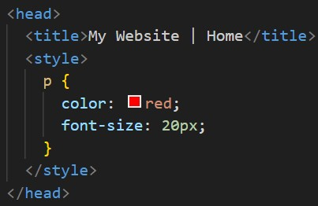
External Stylesheet
It's best to store CSS in an external stylesheet to avoid mixing HTML and CSS together.
To link an external stylesheet, it can be done with the following HTML: 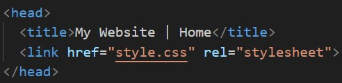 Like the anchor element,
.css is the file format for external stylesheets.To link an external stylesheet, it can be done with the following HTML: 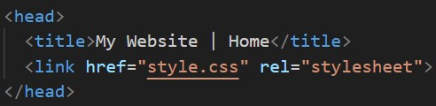 Like the anchor element,
link uses the href attribute which points to where the CSS file is. The rel attribute describes the relationship between the HTML and CSS file.
As a stylesheet is being used, the value rel="stylesheet" needs to be used.
Selectors - Type
Declarations are a fundamental part of CSS as they apply the style to a selected element. The selector is used to target specific HTML tags, then the declaration applies the style.
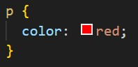
The snippet above will apply the colour red to all
p elements.
Selectors - Universal
The universal selector in CSS applied the declarator to all HTML elements. The universal selector is the asterisk *.
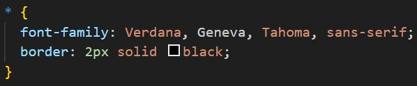
The above rule will apply to all HTML elements, meaning that each element will have the Verdana font as well as a black border which is 2 pixels thick.
Selectors - Classes
In HTML, there is a
Multiple classes can be added to the
class attribute. Creating a class in CSS is done by putting a period before the selector.
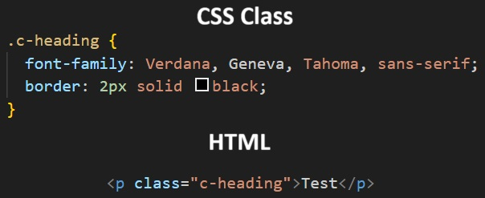
Using .c-heading in any HTML class attribute will apply the chosen CSS class.Multiple classes can be added to the
class attribute to create unique styles.
Selectors - ID
At times, single elements may need to be selected. This can be done in HTML by using the
id="" attribute. In CSS, to select the ID, the hash (#) is used in the selector.
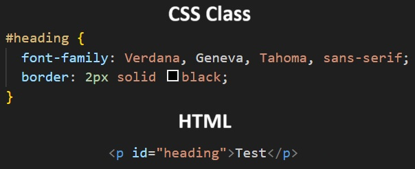
Best practise is to use IDs when only a specific ruleset needs to be applied to an element and not used on multiple elements. Whilst IDs can be used on multiple elements, it's best to use classes for this instead.
Selectors - Attribute
CSS has an attribute selector which allows specific HTML attributes to be selected. This can be done by wrapping the selector in square brackets [ ].
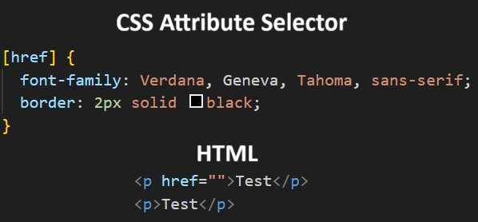
The above example will only apply the style to any HTML tags that have the
Types and/or attribute values can also be specified too. 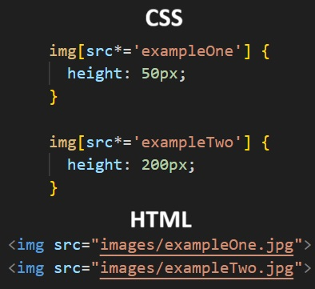 The above example will target the
href attribute applied.Types and/or attribute values can also be specified too. 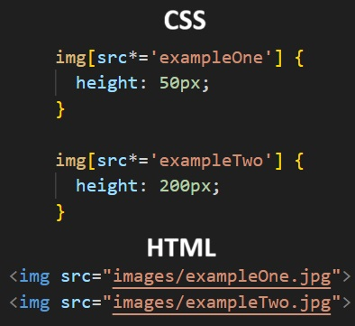 The above example will target the
img tag and match the text within the src attribute. In this example, the images will be sized based on their rule.
Pseudo-Class
Elements on a webpage can change depending on user behaviour. For example, hovering over text may change it's appearance. A good example is when a user hovers over a link on a website and the background image may change to a darker or lighter colour.
Pseudo-classes are applied to rulesets by adding a colon (:) after the selector and adding the name, which are:
:hover-> Changes the behaviour when a user hovers their mouse over the element:visited-> Changes the behaviour when a user has visited a link:disabled-> Will disable the input or user interactbility on a certain field/button/text box:active-> Changes the behaviour of the chosen element when the user has activated it (I.E; by clicking and holding)
Specificity
Specificity is the order by which the browser decides which CSS styles will be displayed. The best practice in CSS is to style elements while using the lowest degree of specificity to that if an element needs a new style, it's easily overridden.
IDs are the most specific selector in CSS, followed by class, then type. Consider the following HTML and CSS below
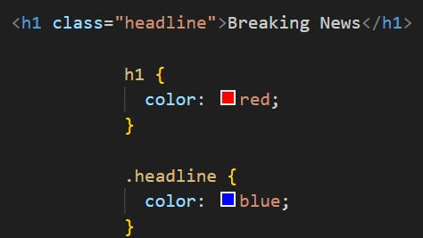
The colour of the text in the example above will be set to blue. This is because the class selector is more specific then the type selector.
If an ID attribute had been set and set to orange, the text would change to orange as the ID if more specific than the class.
To make styles easy to edit, it's best to use the type selector (element name), if possible. If not, use a class selector. If that's not specific enough, use the ID.
To make styles easy to edit, it's best to use the type selector (element name), if possible. If not, use a class selector. If that's not specific enough, use the ID.
Chaining
When writing CSS rules, it's possible to require an HTML element to have two or more CSS selectors at the same time. This is achieved by combining multiple selectors which is called chaining.
For example, if there was a special class for
<h1> elements, the CSS would look like
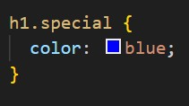
This means that only <h1> elements with the class special would have the style applied. If a <p> element had the attribute class set to special, the style would not be applied.
Descendant Combinator
In addition to chaining selectors to select elements, CSS supports selecting elements that are nested within other HTML elements, known as descendants.
Considering the following:
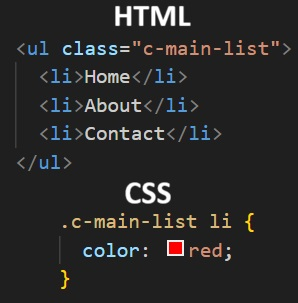
The nested
<li> elements are descendants of the <ul> element and can be selected with the descendant combinator.
Multiple Selectors
To make CSS more concise, it's possible to add CSS styles to multiple CSS selectors at once. This avoid writing repetitive code.
The following code has repetitive style attributes
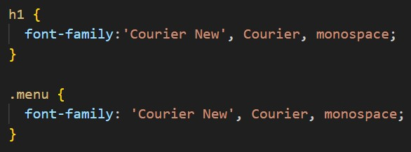
To avoid writing
font-family: 'Courier New', Courier, monospace; twice, they can be separated by using a comma to apply the same style to both.
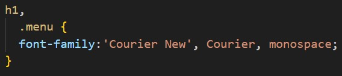
Visual Rules
Font Family
To change the typeface of text on a web page, the
A few things to note when choosing fonts;
font-family property is used.
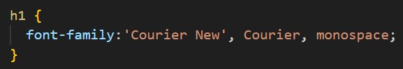
The above CSS rule will change all h1 elements to the font specified.A few things to note when choosing fonts;
- The font specified must be installed on the users computer or must be downloaded with the site
- Web Safe Fonts are a group of fonts supported across most browsers and operating systems
- If web safe fonts are not being used, the chosen font may not appear the same between browsers and operating systems
- When the name of a typeface consists of more than one word, it's best practice to enclose them in quotes (as seen above).
Font Size
To change the font size,
font-size: property is used.
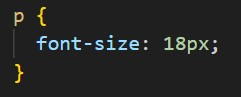
This will set all <p> elements font size to be 18 pixels big.
Text Align
By default, text will always appear on the left of the container it is in. The
text-align: property is used to change how text is aligned within it's container.
The property can be set to one of the following:
left-> Aligns text to the left of its parentcenter-> Centres the text of its parentright-> Aligns the text to the right of its parentjustify-> Spaces out text in order to align with the left and right sides of the parent
Foreground, Background colour and Opacity
The best way to remember what the foreground and background colour affects, if the foreground would affect the text in a container, whilst the background will colour the elements background which doesn't affect the text.
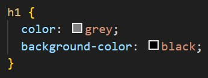
The ruleset above will make all the text grey and the background black.
Opacity is the measurement of how transparent something is. CSS has the
Opacity is the measurement of how transparent something is. CSS has the
opacity: property which controls this. This property can only contain values between 0 and 1. 1 means 100% opacity, 0 means 0% opacity, and 0.5 means 50% opacity. 1 is visible, 0 is invisible.
Background Image
CSS has the ability to change the background of an element. This is achieved by the
background-image property.
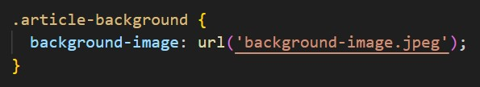
The
!important property
CSS has an
!important property can be applied to specific declarations, instead of full rules. This will override any style no matter how specific. Once !important is used, it's very hard to override.
The syntax of !important looks like this:
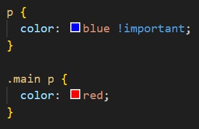
As !important has been used on the <p> selector, all <p> elements will appear blue, even though .main p is more specific.
The Box Model
The Box Model
The box model comprises the set of properties that define parts of an element that take up space on a web page. The model includes the content area size (width & height) and the elements padding, border, and margin.
These properties includes
width & height-> The width and height of the content areapadding-> The amount of space between the content area and the borderborder-> The thickness of the border surrounding the content area and paddingmargin-> The amount of space between the border and the outside edge of the element
Width and Height
An elements content has two dimensions, width and height. By default, the dimensions of a HTML box are set to hold the raw contents of the box.
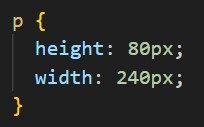
The ruleset above will set the width and height to all
<p> elements to 80 pixels in height and 240 pixels in width. If the width and height are set to pixels, it will appear the same on all devices.
An element that fills a laptop screen may overflow on a mobile device.
Borders
A border is a line that surrounds an element, like a frame around a painting. Borders can be set with a specific width, style, and colour.
By default, the border is set to
width-> The thickness of the border. Can be set in pixels or in one of the following keywords:thin, medium, thickstyle-> The design of the border. Browsers can render any of the 10 different styles. Some includenone, dotted, solidcolor-> The colour of the border. Web browsers can render colours using a few different formats, including 140 built in colours.
By default, the border is set to
medium none color, where colour if the current colour of the element. If width, style, or colour are not set, the browser assigns default values.
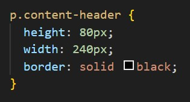
In the example above, the border style is set to solid and the colour is set to black. The thickness is not set, so defaults to medium.
Border Radius
When creating a border, by default the border will be square. CSS allows the borders corners to be modified using the
With CSS, a circle can be created by setting an element to the same width and height, then setting the radius equal to half of the width of the box, which would be 50%. 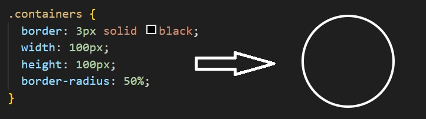
border-radius property.
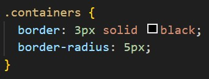
The ruleset above will set all four corners of the border to a radius of 5 pixels (if the same curvature that a circle with a radius of 5 pixels would have).With CSS, a circle can be created by setting an element to the same width and height, then setting the radius equal to half of the width of the box, which would be 50%. 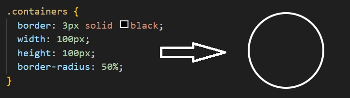
Padding
The space between the contents of a box and the borders of a box is known as padding. Padding is like the space between a picture and the frame surrounding it. This space can be modified by using the
padding property.
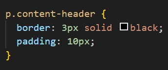
The ruleset above will put 10 pixels of padding between the content of the paragraph and the border on all 4 sides. This property is often used to expand the background colour and make the content look less cramped.
Each side of the padding can be specified using the following properties:
padding-toppadding-rightpadding-bottompadding-left
Padding Shorthand
Defining the left, right, bottom, and top of padding can be in the padding property. A declaration that uses multiple properties as values is known as shorthand property.
These can be specified in various ways:
With 4 values:
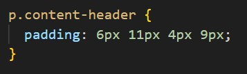
In the above, the four values correspond to the amount of padding on each side in a clockwise direction. In order, it specifies them like so:
padding-top = 6pxpadding-right = 11pxpadding-bottom = 4pxpadding-left = 9px
padding-top = 5pxpadding-leftandpadding-right = 10pxpadding-bottom = 20px
padding-topandpadding-bottom = 5pxpadding-leftandpadding-right = 50px
Margin
The margin refers to the space directly outside of the box. The
margin property is used to specify the size of this space.
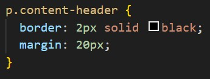
The ruleset above will place 20 pixels of space on the outside of the paragraphs box on all four sides. This means that another HTML element cannot come within 20 pixels of the paragraphs border.
The same with padding, the margin property has different names too. They can be applied like the padding with shorthand properties following the same order.
margin-topmargin-rightmargin-bottommargin-left
The
auto value
The
To centre an element, the width must be set for that element. Otherwise, the width of the div will automatically be set to the full width of its containing element, like the
The ruleset above sets the width to 400 pixels which is less than the width of most displays. This will centre the div within its containing element that is greater than 400 pixels wide.
margin property allows content to be centred. However, there are a few syntax requirements.
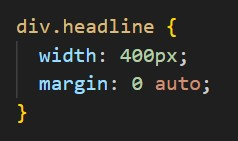
The ruleset above will centre the divs in their containing elements. The 0 sets the top and bottom margins to 0 pixels. The auto value instructs the browser to adjust the left and right margins until the element is centred within its containing element.To centre an element, the width must be set for that element. Otherwise, the width of the div will automatically be set to the full width of its containing element, like the
body for example.
It's not possible to centre an element that takes up the full width of the page since the width of the page can change due to display and/or browser window size.The ruleset above sets the width to 400 pixels which is less than the width of most displays. This will centre the div within its containing element that is greater than 400 pixels wide.
Margin Collapse
With margins, there is a term called margin collapse. Horizontal margins (left and right), like padding, are always displayed and added together. For example, if two divs are next to each other, they will be as far apart as the sum of their adjacent margins.
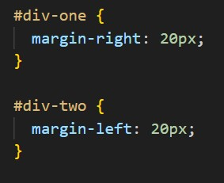
The rulesets above will place each div next to each other with a 40 pixel gap between them.
Unlike horizontal margins, vertical margins do not add. Instead, the larger of the two vertical margins sets the difference between adjacent elements. 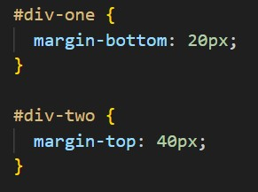 The vertical margin between
Unlike horizontal margins, vertical margins do not add. Instead, the larger of the two vertical margins sets the difference between adjacent elements. 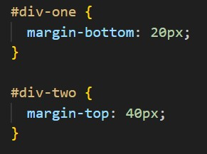 The vertical margin between
#div-one and #div-two elements is 40 pixels. Although the sum is 60 pixels, the margin collapses so the spacing is only dependant on #div-two top margin.
Minimum and Maximum Height and Width
Because web pages can be viewed through different screen sizes, the content on the web page can suffer from those changes in size. To avoid this problem, CSS offers two properties that can limit how narrow or how wide an elements box can be. The same applies to the height too.
min-width-> Sets the minimum width of an elements boxmax-width-> Sets the maximum width of an elements boxmin-height-> Sets the minimum height of an elements boxmax-height-> Sets the maximum height of an elements box
Overflow
All of the components of the box model comprise an elements size. For example, an image that has the following dimensions is 364 pixels wide and 244 pixels tall.
The
- 300 pixels wide
- 200 pixels tall
- 10 pixels padding on the left and right
- 10 pixels padding on the top and bottom
- 2 pixels border on the left and right
- 2 pixels border on the top and bottom
- 20 pixels margin on the left and right
- 10 pixels margin on the top and bottom
The
overflow property controls what happens to content that overflows outside of its box. These are the commonly used values.
hidden-> Any content that overflows will be hidden from viewscroll-> A scrollbar will be added to the elements box so that the rest of the content can be viewed by scrollingvisible-> The overflowed content will be displayed outside of the containing element. This is the default value.
Resetting Defaults
All major web browsers have a default stylesheet they use in absence of an external stylesheet. These default stylesheets are known as user agent stylesheets. In this case, the term user agent is a technical term for browsers.
User agent stylesheets often have default CSS rules that set default values for padding and margin. This affects how the browser displays HTML element, which can make it difficult for a developer to design or style a web page. Many developers choose to set these default values so that they can work with a clean slate. 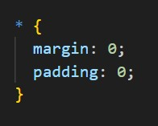 The ruleset above resets the margin and padding of all HTML elements. It is often the first CSS rule in an external stylesheet. As both of the properties are set to 0, no unit of measurement is required.
User agent stylesheets often have default CSS rules that set default values for padding and margin. This affects how the browser displays HTML element, which can make it difficult for a developer to design or style a web page. Many developers choose to set these default values so that they can work with a clean slate. 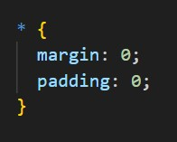 The ruleset above resets the margin and padding of all HTML elements. It is often the first CSS rule in an external stylesheet. As both of the properties are set to 0, no unit of measurement is required.
Visibility
Elements on a HTML page can be hidden from view with the
visibility property. The visibility property can be set to one of the following values:
hidden-> Hides the elementvisible-> Displays an elementcollapse-> Collapses an element